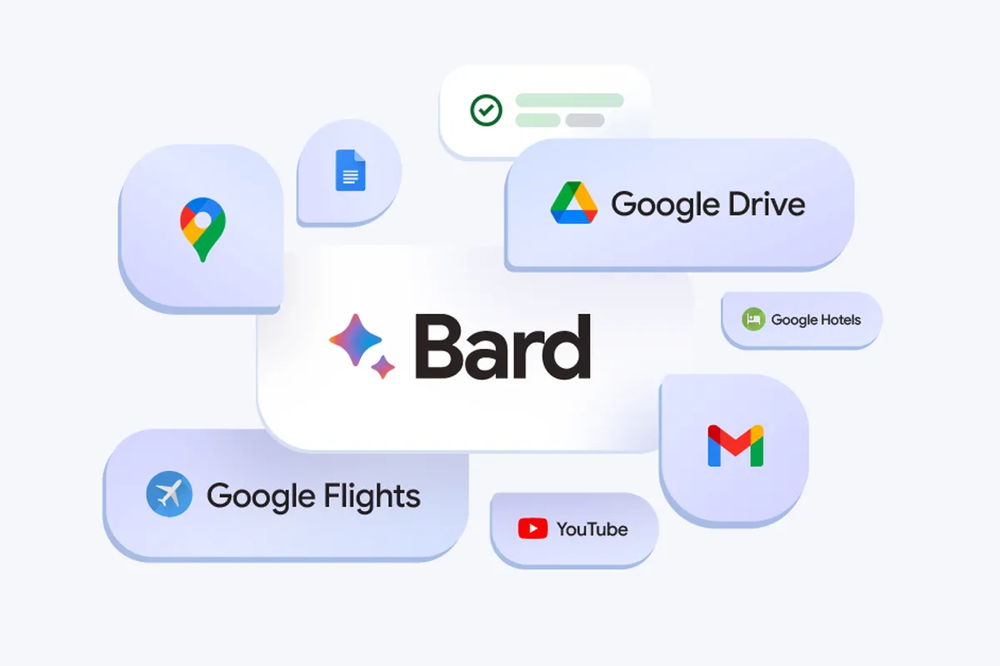
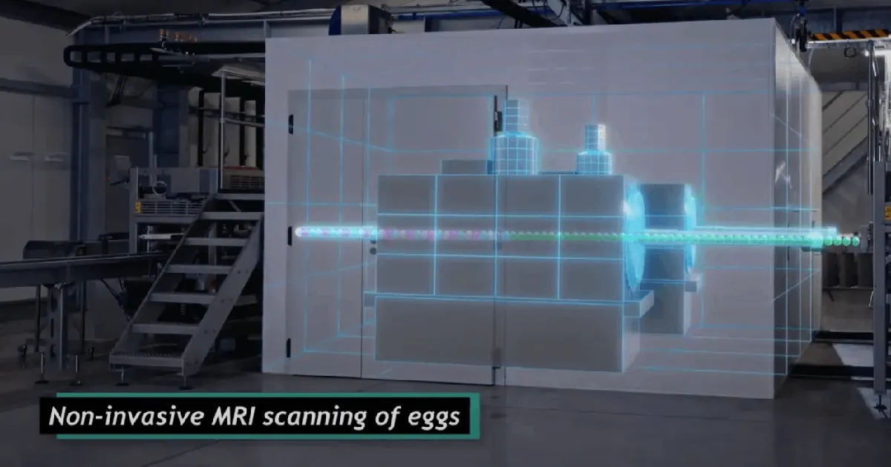
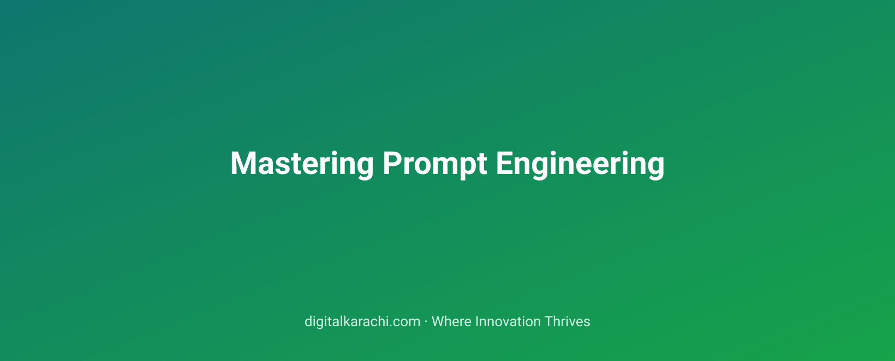
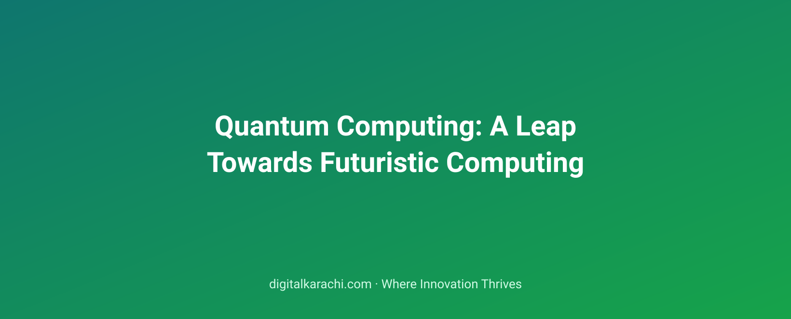

Object Storage as a Primary Database: Emerging Patterns in Cloud Computing
Explore how object storage is evolving beyond its traditional role to become a primary database for modern applications, offering scalability and cost-efficiency.
All articles filed under Technology.
Explore how object storage is evolving beyond its traditional role to become a primary database for modern applications, offering scalability and cost-efficiency.
Explore the nuances of hyperparameter tuning in machine learning models, focusing on budget constraints, Bayesian optimization techniques, and long-term performance improvements.
Spatial audio in virtual reality enhances realism, but its full potential remains underutilized. Learn how to elevate your VR experiences with these techniques.
Discover the comprehensive workflow of using inspection drones in infrastructure projects to improve efficiency, safety, and accuracy.
Modern applications are increasingly built in containers, but securing these complex environments requires a multifaceted strategy to protect both data and systems.
Learn how to create a robust evaluation framework tailored for large language models in specific domains like finance, healthcare, and legal.
Exploring the current landscape of robotics education in South Asia, challenges faced by universities, and potential solutions.
Pakistan’s industrial sector is poised to transform with the advent of IoT, enhancing productivity and competitiveness.
As your data science projects grow, transitioning from notebooks to scripts and tests is crucial for maintaining code quality and scalability.
HTTP/3 promises to revolutionize web performance with its low-latency, multiplexing capabilities, making it a crucial technology for modern applications.
Learn how variational quantum algorithms (VQAs) are revolutionizing near-term quantum computing, providing practical solutions for optimization and simulation tasks.
Explore the current landscape of tokenized assets, understanding both regulatory challenges and technical solutions.
Discover the best practices and pitfalls of implementing GitOps in your infrastructure to ensure flexibility, scalability, and resilience.
How foundational models are reshaping feature engineering practices and challenging traditional approaches.
Understanding avatars in social virtual reality involves exploring their impact on identity and expression while navigating the challenges of effective moderation.
How advancements in first-person view (FPV) racing technology are driving innovations in industries like autonomous vehicles and robotics.
Understanding the basics of threat modeling is crucial for small engineering teams to protect their applications and data effectively.
Hybrid search combines the best of lexical and vector retrieval methods, delivering highly relevant results at scale.
How autonomous machines are reshaping the construction industry with slow but steady progress.
Learn how to secure your IoT fleet by understanding provisioning, rotation, and attestation processes.
Why consolidating data into a robust product analytics platform can lead to better decision-making and user experience.
Explore the complex architecture behind real-time multiplayer applications, from low-latency data synchronization to distributed systems.
Understanding how to effectively integrate classical and quantum computing resources in real-world applications.
Exploring the current state and future trends of Layer-2 solutions in blockchain technology.
A comprehensive guide to designing virtual private clouds (VPCs) for successful SaaS startups, covering best practices and key considerations.
From initial idea to continuous monitoring, explore the complex journey of machine learning models in production environments.
Understanding the unique grammar of cinematic virtual reality for immersive storytelling.
Discover how first-person view (FPV) racing technology has evolved beyond recreational use, influencing industries like agriculture, construction, and surveillance.
Learn how to secure your APIs against abuse by implementing effective rate limits, authentication mechanisms, and other preventive measures.
Exploring how modern AI models use embeddings to capture meaning, revealing the gaps in this powerful technique.
A comprehensive guide to understanding the critical role of sensor stacks in modern robotics.
Learn how to efficiently process and derive value from sensor data, essential for IoT applications in various industries.
Learn how to implement scalable funnel analytics in your application to optimize user journeys and maximize conversions.
Discover how hidden browser APIs have revolutionized web development without drawing attention to themselves.
Evaluate the strengths and weaknesses of major open-source quantum frameworks to guide your development and research.
Explores how zero-knowledge proofs (ZKPs) extend beyond privacy to enhance authentication, supply chain verification, and more in blockchain technology.
Exploring the complexities of implementing multi-region cloud architectures, including trade-offs in cost, complexity, and performance.
Discover how active learning can significantly reduce labeling costs while improving model performance in machine learning projects.
Spatial computing is reshaping virtual reality by enabling more intuitive and immersive experiences through better understanding of spatial relationships.
Consumer-grade drones have revolutionized mapping and surveying, offering precision and efficiency at a fraction of traditional costs.
Learn about the essential network segmentation techniques to secure hybrid cloud environments and protect sensitive data.
Learn how red-teaming can help ensure the robustness and security of large language models (LLMs) through structured adversarial testing.
Explore the strengths of RPA and physical robots in automation, understanding when each is best suited for your workflow.
Learn how over-the-air (OTA) updates can be implemented safely in embedded device fleets, ensuring reliability and security.
Learn the principles behind Bayesian A/B testing and how it can help you make data-driven decisions in your tech projects.
Learn the key principles and best practices in designing efficient and scalable APIs using REST and GraphQL, based on real-world experiences over the past decade.
Exploring the potential of quantum computing in solving complex combinatorial challenges with emerging algorithms and hardware.
Understand what MEV is, its implications on blockchain security and efficiency, and why developers must address it in their projects.
Explore strategies to minimize cold start impact and ensure responsiveness in serverless architectures for real-time applications.
Exploring advanced techniques to prevent data leakage in machine learning models without compromising accuracy.
WebXR is revolutionizing immersive web content but faces challenges in adoption and consistency across browsers.
Explore how the cutting-edge technology behind FPV (First Person View) drone racing is transforming industries beyond hobbyist enthusiasts.
Artificial intelligence promises transformative security but often falls short in practical application, leaving organizations wary of overpromised and underdelivered solutions.
Learn how to build AI systems that handle errors gracefully without compromising user experience or system integrity.
Learn how remote control enables precise and efficient operation of robots in various industries, from manufacturing to space exploration.
Learn how mesh networking enhances IoT reliability through its decentralized architecture and self-healing capabilities.
Cohort analysis helps in understanding user behavior, but it can lead to misinterpretation if not performed carefully.
Learn how modern edge computing strategies can reduce latency in real-time applications without compromising performance.
Exploring the real-world implications of combining classical computing with quantum technologies.
An in-depth analysis of cross-chain bridges, their security challenges, and the strategies to mitigate them.
Evaluate essential cloud certifications in a rapidly evolving tech landscape to stay competitive.
Exploring advanced techniques like content-based filtering, matrix factorization, and hybrid models to build more accurate and diverse recommendation systems.
Virtual reality is transforming healthcare beyond just pain management, with applications in therapy, training, and patient engagement.
An in-depth look at the various battery chemistries used in drones, their trade-offs, and best practices for field use.
Understand the critical importance of Cloud Identity and Access Management (IAM) hardening to secure your cloud environment.
Explore how multi-modal AI is transforming industries with practical applications beyond simple demonstrations.
Exploring the complexities of regulatory compliance and engineering challenges in surgical robotics.
Understanding the critical role of time-series databases in managing IoT data efficiently.
Data quality monitoring is essential but often overlooked, ensuring the integrity of data-driven decisions in organizations.
Learn essential practices to secure your software supply chain against modern threats, including code scanning and continuous monitoring.
Explore the diverse career opportunities available to software engineers in quantum computing across various roles and industries.
Creating an intuitive and secure cryptocurrency wallet experience is crucial for broader adoption. Here’s how to design with the user in mind.
Learn how effective tagging practices can transform cost management in cloud infrastructure, ensuring transparency and accountability for your organization's expenses.
Statistical models often excel in time-series forecasting, outperforming deep learning techniques due to their interpretability and robust performance on certain data types.
Virtual reality is transforming therapy, but its clinical effectiveness and adoption face significant challenges.
Exploring the growth potential and challenges faced by Pakistan’s nascent drone industry.
Strategies for protecting remote workers' devices while preserving their productivity and autonomy.
Learn to assess large language models (LLMs) objectively by focusing on performance metrics and real-world usability rather than superficial impressions.
From medical devices to industrial automation, soft robotics is transforming industries with its adaptability and safety.
Discover how digital twins are being used in real-world applications to enhance operational efficiency and innovation.
Learn how modern data science techniques like RFM and embedding-based clustering can revolutionize customer segmentation for businesses of all sizes.
Developer experience is no longer an afterthought; it's a critical factor shaping the future of software development.
Quantum error correction marks a critical step towards practical quantum computing, but what does it mean for the future of technology?
Exploring blockchain’s potential to revolutionize remittances in Pakistan, a market ripe for disruption.
Discover how to optimize Kubernetes cluster costs through strategic node pool management and scheduling.
Prepare thoroughly for machine learning system design interviews with these essential tips and strategies.
Virtual reality offers immersive training solutions that can revolutionize how businesses prepare their employees, but not every area benefits equally.
Explore how cargo drones are transforming middle-mile logistics, offering efficient solutions for last-mile delivery challenges.
Learn the fundamentals of encryption to protect your data across all environments—rest, transit, and use. Essential for every tech professional.
Enterprise adoption of small language models is growing, offering flexibility and cost efficiency without sacrificing performance.
Exploring the financial challenges faced by robotics startups as they scale, from hardware development to market competition.
Exploring the potential of industrial IoT in transforming manufacturing and logistics sectors across Pakistan.
Navigating the critical first quarter to lay down a robust data foundation in an organization.
Headless commerce is transforming retail tech by decoupling frontend and backend systems, offering greater flexibility and scalability.
Why topological qubits are seen as a promising but slow-burning solution in quantum computing.
Account abstraction is transforming blockchain interactions by simplifying user experiences, making crypto more accessible to everyone.
Learn the common pitfalls of using S3 that can silently hike up your cloud costs without you even noticing.
A step-by-step guide to ensuring your machine learning projects are reproducible and reliable.
Discover the latest trends and best practices for developing virtual reality applications using Unity, a leading game development engine.
Navigating the complex landscape of drone regulations and technological challenges to achieve efficient urban delivery systems.
Why the transition to post-quantum cryptography is crucial in today’s digital landscape.
Explore the benefits and applications of synthetic data in AI development, highlighting its underutilized potential.
Explore how mobile robots are transforming hospital operations, enhancing logistics efficiency and streamlining disinfection processes.
Explore the essential MQTT broker architectures for handling large-scale IoT deployments, ensuring reliability and scalability.
Understanding and applying statistical significance in product development can help teams make data-driven decisions without getting lost in complex terminology.
Static-site generators (SSGs) are becoming the preferred choice over dynamic content management systems (CMS). Explore their advantages and why they’re taking center stage in web d…
Exploring the future of quantum communication networks and their potential to revolutionize data transfer.
Blockchain networks are evolving beyond simple validation to incorporate restaking and shared security mechanisms that enhance both decentralization and efficiency.
Discover essential FinOps practices to optimize cloud spending without hindering your engineering teams.
Learn why your machine learning models might not be as confident as they appear and how to improve their reliability with calibration techniques.
Navigating the trade-offs between comfort and immersion in virtual reality experiences.
Discover how drones are revolutionizing disaster response with case studies from wildfires, floods, and search-and-rescue operations.
Understand the critical security risks that threaten web applications and how to mitigate them.
Dive deep into the mechanics of transformer attention mechanisms, essential for understanding modern AI architectures like those used in natural language processing.
Exploring the challenges and considerations in designing robots for elder care to ensure they are both helpful and humane.
Exploring the evolving IoT data privacy regulations and their impact on device manufacturers, service providers, and users.
Explore the evolving landscape of data stacks, understanding their components, costs, and key trade-offs in today's tech-driven world.
An in-depth look at composable architecture's benefits, challenges, and implementation strategies as the next evolution of microservices.
Explore diverse routes to a career in quantum computing that involve practical, theoretical, and applied education.
Understanding on-ramps and off-ramps is crucial for blockchain adoption, yet these technical building blocks often go unnoticed.
Achieving seamless integration in hybrid cloud strategies requires careful planning and execution, focusing on key areas like network, security, and application management.
Learn how to conduct thorough bias and fairness audits in ML pipelines to ensure ethical, unbiased models that serve everyone.
Explore the latest trends and must-know features of VR headsets as we gear up for the year 2026.
Exploring the transformative impact of software-defined radio on drone communications, enhancing flexibility and security in aerial operations.
Learn how to craft effective alerts that minimize false positives and ensure your security operations run smoothly.
Explore the future of AI processing where data is analyzed without cloud interference, enhancing privacy and performance.
Why dexterous robotic manipulation remains a challenging frontier despite advances in AI and hardware.
Learn how to implement secure over-the-air updates for embedded fleets, ensuring reliability and security in an increasingly connected world.
Data contracts are reshaping how data producers ensure consistency and integrity in their datasets, making them indispensable for modern data pipelines.
Explore scenarios where alternative container orchestration tools outshine Kubernetes, offering efficient and scalable solutions.
Learn to critically evaluate claims of quantum advantage in practical applications without relying on specific examples or dates.
How corporations are using Bitcoin to manage risk, diversify assets, and enhance liquidity in their financial strategies.
How to maintain robust security without overcomplicating your cloud infrastructure.
Gradient boosting excels in predictive modeling due to its robustness and flexibility, making it a top choice for Kagglers.
Learn how haptic technology is revolutionizing virtual reality, enhancing user interaction and making experiences more realistic.
Learn how to establish an efficient drone fleet operations team that can manage both commercial and personal drones effectively.
Learn how to safely rotate encryption keys in your production environment without causing downtime or service disruptions.
Unleash the potential of synthetic data to accelerate AI development without the risks and costs of traditional data collection.
Discover the key components and systems powering today’s advanced warehouse robotics, from autonomous mobile robots to AI-driven inventory management.
Explore the key differences between LoRaWAN and cellular IoT in terms of range, cost, power consumption, and deployment flexibility for your next project.
Explore the powerful yet accessible methods of geospatial analytics that can help non-experts unlock valuable insights from location data.
Explore lightweight and effective alternatives to service meshes that can simplify your microservices architecture without compromising on performance or security.
Explore the nuances between quantum cryptography and post-quantum cryptography, understanding their roles in secure communication in an increasingly quantum world.
Learn the essential steps to ensure your smart contracts are secure and reliable, avoiding common pitfalls in deployment.
Exploring the rise of edge computing through edge functions to tackle high-latency challenges in real-time applications.
An in-depth guide to understanding causal inference, its importance in machine learning, and how it can enhance model accuracy.
Eye tracking technology in virtual reality (VR) enhances user experience but raises complex privacy concerns that must be addressed.
Exploring the benefits, challenges, and future prospects of using drones to monitor wildlife populations.
Learn how regular tabletop exercises can transform reactive postmortem analysis into proactive preparedness for cybersecurity threats.
Discover the key patterns and strategies for successfully deploying and managing AI agents in real-world applications.
Learn how cobots are revolutionizing small manufacturing by enhancing safety and productivity without the high costs of traditional automation.
Harnessing the power of Internet of Things (IoT) to revolutionize farming practices and boost productivity in South Asian countries.
Data lineage is crucial for maintaining trust in data-driven decisions. Learn why tracking data origins, transformations, and uses matters.
How local-first software development empowers communities by leveraging regional resources, and the tools that enable it.
Can quantum computing truly revolutionize chemistry research, or is it just hype? Explore the potential and challenges of using quantum technology in chemical simulations.
Decentralized autonomous organizations (dao) have emerged as key players in blockchain governance, but their successes and failures offer valuable lessons for future projects.
Explore the key trade-offs in choosing cloud-native databases, from performance to cost, and discover which factors matter most for your application.
Understanding how to select the appropriate loss function is crucial for improving model performance in imbalanced datasets.
Virtual reality (VR) enhances remote collaboration, offering immersive experiences and improving productivity. Learn from real-world implementations.
Explore the advanced coordination algorithms driving drone swarms, from swarm formation to real-world applications.
Learn how to craft comprehensive incident response runbooks that protect your startup from cyber threats and maintain business continuity.
Learn how to implement essential guardrails—input filters, output validators, and audit logs—to ensure your AI products are reliable, secure, and compliant.
South Asian universities are increasingly integrating robotics into their curricula to equip students with essential skills for the future. Here’s how these institutions are shapin…
Discover how IoT-driven predictive maintenance is transforming industrial operations by optimizing asset uptime and reducing downtime costs.
How to create effective data visualizations that engage users and drive meaningful insights.
Event-driven architectures are quietly transforming how we build resilient, scalable, and efficient backends.
Explore the cutting-edge technologies of quantum computing, focusing on superconducting qubits, ion traps, and photonics.
Revolutionizing User Experience in Blockchain by Simplifying Wallet Interactions and Enhancing Security.
In 2026, choosing between serverless and containers requires understanding the unique needs of your application architecture.
Learn how to detect anomalies in unstructured data using machine learning techniques without labeled data.
Explore how virtual reality transforms teaching methods, focusing on subjects like history, science, and language arts.
Explore the ethical considerations and technical skills needed to use drones in journalistic photography, ensuring accuracy and respect.
Learn how tabletop exercises transform postmortems into proactive preparedness, enhancing cybersecurity in modern organizations.
Context windows in AI models are often overemphasized as a limiting factor. Here's why and what truly matters more.
Discover the best practices and design patterns for implementing ROS 2 in real-world production environments, focusing on reliability, scalability, and maintainability.
Understanding how data from wearable devices is collected, processed, and utilized in modern health applications.
Learn how to effectively communicate insights using techniques borrowed from journalism to make your data stories compelling and impactful.
WebAssembly is transforming server-side development and edge computing, enabling faster and more efficient applications beyond the browser.
The real-world progress of quantum computing in 2026, from technological advancements to industry adoption.
An in-depth look at the practical applications and limitations of permissioned blockchains in enterprise settings.
Learn how to implement robust disaster recovery strategies without breaking the bank.
Learn about drift detection methods that can reliably identify data changes in your machine learning models, ensuring they stay effective over time.
Virtual reality transforms architectural and real estate projects, offering immersive experiences that enhance communication and decision-making.
Understanding the crucial aspects of drone insurance, including coverage types and essential considerations for operators.
Explore the latest advancements in multi-factor authentication (MFA) that offer robust protection against phishing attacks, ensuring your digital security remains unbreachable.
Learn essential prompt engineering strategies that ensure your AI queries remain effective even as models evolve.
Understand the crucial safety standards in robotics to ensure your projects are both effective and secure.
Smart solutions using IoT can optimize water usage and ensure sustainability in rapidly expanding urban areas.
Explore how Reverse ETL transforms data back into operational systems, optimizing processes and enhancing decision-making.
Why using established and reliable tools can be a strategic advantage in tech startups.
Explore the evolving landscape of quantum computing as a service and how leading cloud providers are integrating this transformative technology.
Stablecoins are transforming cross-border payments in emerging markets, offering faster and cheaper transactions compared to traditional methods.
How to implement robust cloud-scale logging without excessive costs or complexity.
Feature stores streamline machine learning workflows but can sometimes complicate simpler projects.
Virtual reality fitness has seen an unexpected rise, transforming how we exercise and socialize.
Underwater drones are revolutionizing marine exploration, but what exactly is driving this trend and how can they benefit industries?
Supply chain attacks are a growing threat to organizations. Learn how to secure your technology ecosystem effectively.
Exploring the trade-offs between fine-tuning and prompting in AI model deployment to find the most cost-effective solution.
Explore the transformative potential of drone-mounted manipulators in industries from construction to manufacturing, and how they are revolutionizing tasks traditionally performed …
Dive into the complexities of edge computing in IoT, exploring why and how inference should be handled on-device.
Learn how to effectively sample streaming data for analytics without losing critical insights.
Discover how PostgreSQL’s advanced features can transform your tech stack, replacing multiple tools with a single powerful database.
Explore the features and capabilities of three leading open-source quantum computing frameworks—Qiskit, PyQuil, and Bridge—to determine which best suits your project.
Non-fungible tokens (NFTs) are revolutionizing beyond digital art. Learn how they are being used for tickets, credentials, and memberships.
Discover cost-effective strategies for disaster recovery without breaking the bank.
Learn how to build a practical MLOps setup that focuses on simplicity and effectiveness, avoiding unnecessary complexity.
Virtual reality transforms architectural designs and real estate tours, offering immersive experiences that enhance client engagement.
Learn about the latest technologies in counter-drone systems to protect against unauthorized drone intrusions.
Learn how to protect your Continuous Integration/Continuous Deployment (CI/CD) pipelines from malicious dependencies that could compromise your applications.
Exploring the role of token economics in ensuring long-term sustainability and financial viability of language model features.
Exploring the current state of humanoid robotics in 2026, separating the reality from the hype.
How Internet of Things is transforming retail by improving inventory management and enhancing customer experiences.
Learn how to apply survival analysis techniques in churn modeling, enhancing your predictive capabilities and business insights.
Mastering infrastructure as code (IaC) is essential for managing complex systems in large organizations. Learn proven patterns that ensure consistency, security, and efficiency.
Understanding the critical steps organizations must take to secure their data against quantum threats.
Oracles are essential in blockchain applications but pose significant challenges, especially in decentralized finance (DeFi). Explore how these smart contracts connectors affect th…
Learn how to optimize cloud resources by mastering autoscaling, a powerful yet often underutilized tool.
Explore the essential steps in deploying an effective machine learning model, from data preparation and training to monitoring and maintenance.
Exploring the future of mixed reality and how passthrough augmented reality is shaping our virtual experiences.
Explore the diverse landscape of drone pilot certification programs and their global standards.
Explore the critical role of certificate pinning in securing mobile apps and discover advanced security measures to protect sensitive data.
Retrieval-augmented generation (RAG) boosts AI models by integrating external knowledge, but its effectiveness depends on how it’s used.
Discover six open-source robotics platforms that can empower your next project with flexible and customizable solutions.
Deciding between building your own IoT platform, buying a commercial solution, or leveraging open source tools can significantly impact project success and cost.
Explore the key factors to consider when choosing between building or buying experimentation platforms for your data science projects.
Explore the expanding universe of observability tools and techniques that go beyond logs, metrics, and traces to provide deeper insights into your system’s health.
Exploring the practical implementation of quantum random number generation (QRNG) in today’s data-driven world, this article delves into its benefits and challenges.
Discover the emerging trends and best practices in on-chain identity solutions that are reshaping decentralized systems.
Learn how to avoid unexpected costs when transferring data between clouds by understanding common pitfalls and best practices.
Machine learning models often output probabilities that are not calibrated, leading to misleading predictions. Learn how calibration can improve your model’s reliability.
Mobile virtual reality (VR) is transforming how we interact with digital content, but optimizing performance remains a critical challenge.
In 2026, a significant change in drone regulations opens up new possibilities for industries like agriculture and delivery services.
Understanding the practical implementation and benefits of zero-trust in enterprise security.
Discover the intricate architecture of a modern retrieval-augmented generation (RAG) pipeline, from data sourcing to model deployment.
How autonomous machines are transforming modern farming practices to increase efficiency and sustainability.
Discover how IoT sensors revolutionize building energy management, offering real-time data and predictive analytics to optimize efficiency.
Senior data analysts master advanced SQL techniques that optimize performance and derive deeper insights.
Discover how modern build tools like Vite, Turbopack, and Bun are transforming web development workflows with faster builds and more efficient deployment.
Discover how quantum sensing is revolutionizing precision measurement with applications in medicine, navigation, and environmental monitoring.
Sim-to-real transfer in robotics is a promising technique that bridges the gap between simulation and real-world applications, enabling faster deployment of advanced robot systems.
Explore the evolution of privacy coins by 2026, their technical advancements, and how regulatory landscapes are shaping their future.
Get ready for the future! The UK plans to introduce flying drone taxis by 2026, revolutionizing urban travel.
Borrowing from Software Development. Data science draws heavily from software development – think DevOps evolving into MLOps. The 'full-stack data scientist' has become the must-ha…

Bard Revolutionizes YouTube Navigation: Effortlessly Find Recipe Details and Video Summaries. Google's AI chatbot Bard has been steadily improving since its debut.
Threat Intelligence (TI) is a complex field whose aim is to understand and predict threats based on data collected across the internet, dark web and incident reports.
In a groundbreaking collaboration between Google Research and Cornell University, a revolutionary new image inpainting and outpainting model called RealFill is changing what we exp…

Orbem, a Munich-based Startup, Raises $31.8M for Innovative AI-Powered MRI Technology – Targeting Poultry Eggs First, Then Humans. Countries like Germany have started to disrupt th…
As we further our exploration into the world of Artificial Intelligence (AI), it's clear that this technology will continue to grow and shape our future.
In an era where technology is constantly evolving, one of the areas experiencing significant transformation is the retail industry.
Free hosting still exists in 2023 — but the modern flavour is platform-as-a-service (Vercel, Netlify, Cloudflare Pages, Hostinger free plans). Here is what each one is actually goo…

Prompt engineering is the new SQL — a small, learnable craft that punches far above its weight. Here is what actually moves the needle.
From AI-driven defence to post-quantum cryptography, cybersecurity in 2023 is changing faster than most teams can keep up. Here is what to actually pay attention to.

Quantum computing is finally crossing the line from physics demo to credible engineering — and the implications for cryptography, chemistry and optimisation are bigger than the hyp…
AI in healthcare is no longer about chatbots and triage apps. The interesting frontier is at the interface between large models and the daily work of clinicians.
The buzzword era of Big Data is over. What's left is the boring, useful infrastructure that lets ordinary teams answer ordinary questions — fast.